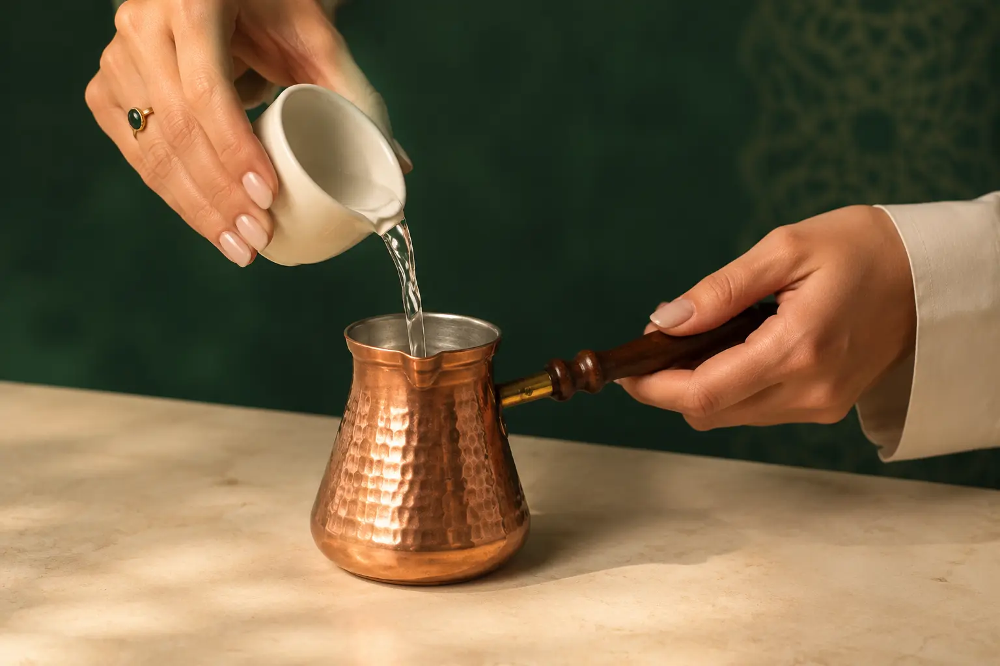
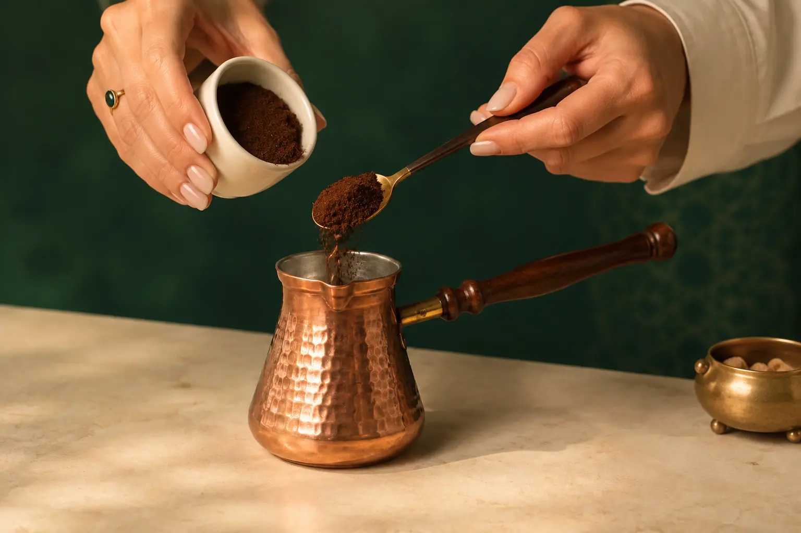
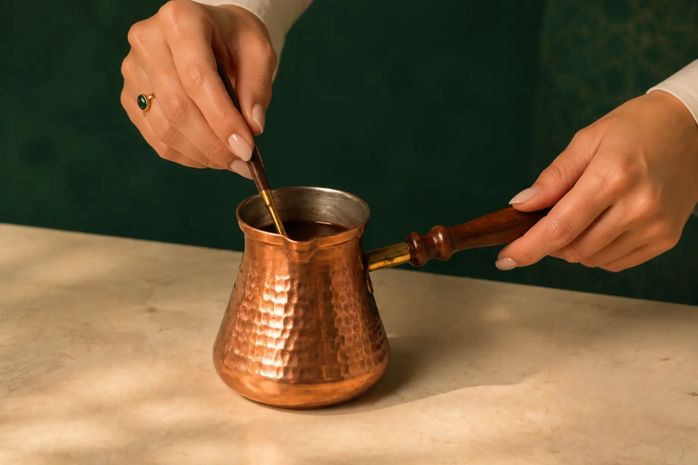
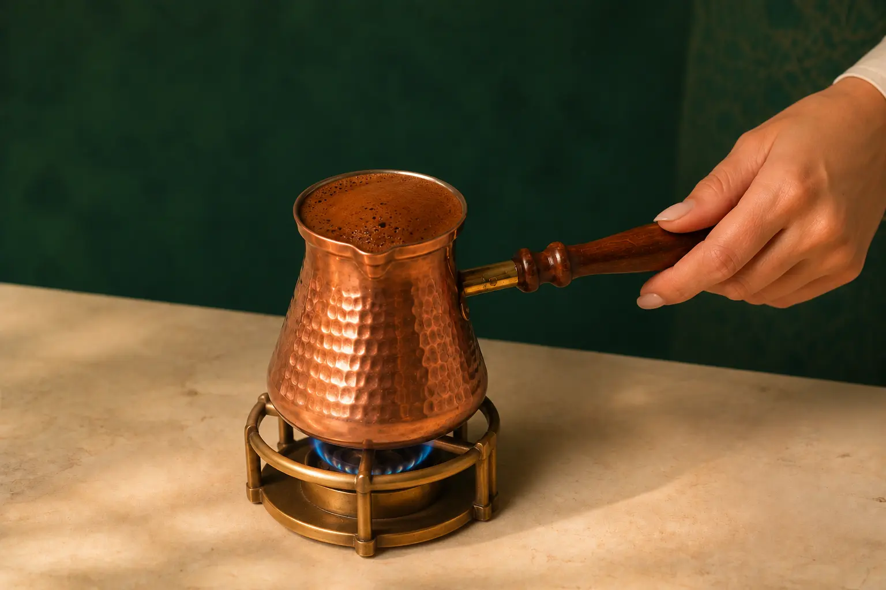
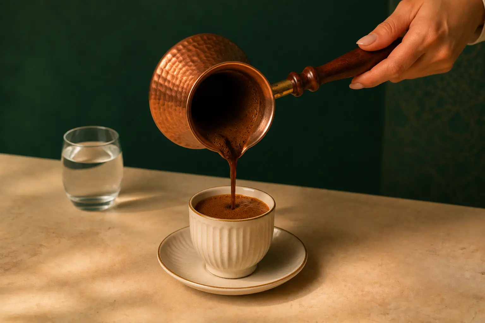

Step 01
Measure the water
Pour one small cup of cold water into the cezve for each serving you plan to prepare.

Traditional Turkish-style coffee with a rich, aromatic character and a medium-dark roast, crafted for the quiet ritual of the cezve.
How to brewUse the cup you will serve in to measure both the water and the finished portion.

Pour one small cup of cold water into the cezve for each serving you plan to prepare.

Add one heaping teaspoon of finely ground coffee per cup. Add sugar now, if desired.

Stir until the coffee is evenly combined with the water. Do not stir again once it begins heating.

Heat slowly over low heat. Remove the cezve as the foam rises toward the rim. Do not allow it to boil.

Pour gently to preserve the foam, then wait about one minute for the grounds to settle before drinking.
Serve slowly, traditionally with a small glass of water, and leave the settled grounds at the bottom of the cup.
Explore the collection